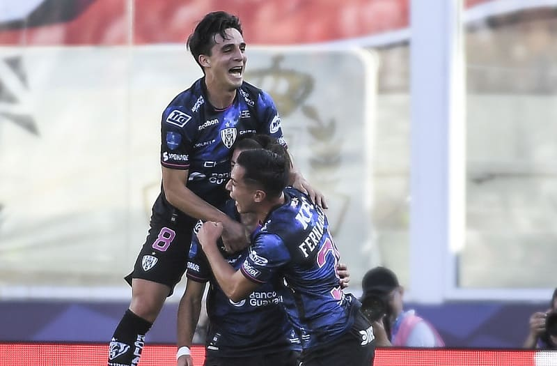
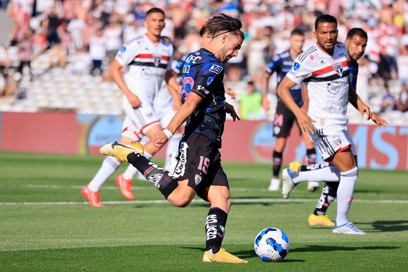
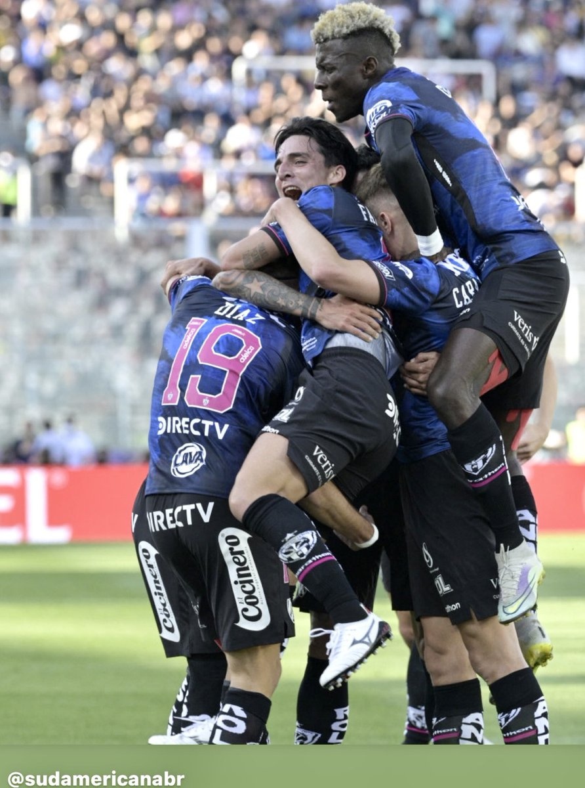

Champion of Cup The Sudamericana in 2022
Independiente del Valle was crowned champion of the Copa Sudamericana by beating Sao Paulo, from Brazil, 0-2. Lautaro Díaz and Lorenzo Faravelli were the protagonists who gave the victory to the Ecuadorians.
The 'Matagigantes' ratified that title at the Mario Alberto Kempes stadium in Córdoba, Argentina, by beating the great from Brazil, and repeats this glory achieved in 2019.
The teams took to the field seven minutes before the start of the game and the Brazilian shouting became eerie despite the fact that almost half the stadium was empty.
Sao Paulo sought at the beginning, to attack on the left. The Ecuadorians defended themselves during the first minutes and, when they got the ball, they took care of it with the short and precise passes characteristic of the team led by the Argentine Martín Anselmi.
Thirteen minutes into the game, Díaz made it 0-1 by receiving an assist from Faravelli inside the area and shooting hard at the near post

At 16, Jonathan Calleri could have scored the equalizer but his shot was too slow and Wellington Ramírez controlled without problems.
At 28, Calleri again wasted a great opportunity: the striker got rid of the goalkeeper with a speed dribble but finished off with his left foot and the ball was not destined for a goal.
Except for those isolated attacks by Calleri, Independiente del Valle did not have great difficulties in controlling a rival that, minute by minute, seemed more and more nervous and lacking in ideas.

At the start of the second half, the Brazilian team began to overflow easily, but neither Calleri nor Luciano were able to convert their crosses into goals.
At minute 55, Díaz collided outside the area with Felipe Alves and had to be attended to by doctors to continue.
At minute 67, Díaz, the figure of the game, assisted Faravelli, who faced the unmarked goalkeeper and calmly defined to make it 0-2.
The last 15 minutes passed smoothly: Sao Paulo continued betting on overflows and crosses and the Ecuadorians took care of the ball every time they recovered it.
In added time, Calleri and Diego Costa were sent off.
With this victory, Independiente del Valle won its second Copa Sudamericana.
The first was won in 2019 by beating Argentine Colón 3-1 in the Paraguayan city of Asunción.
